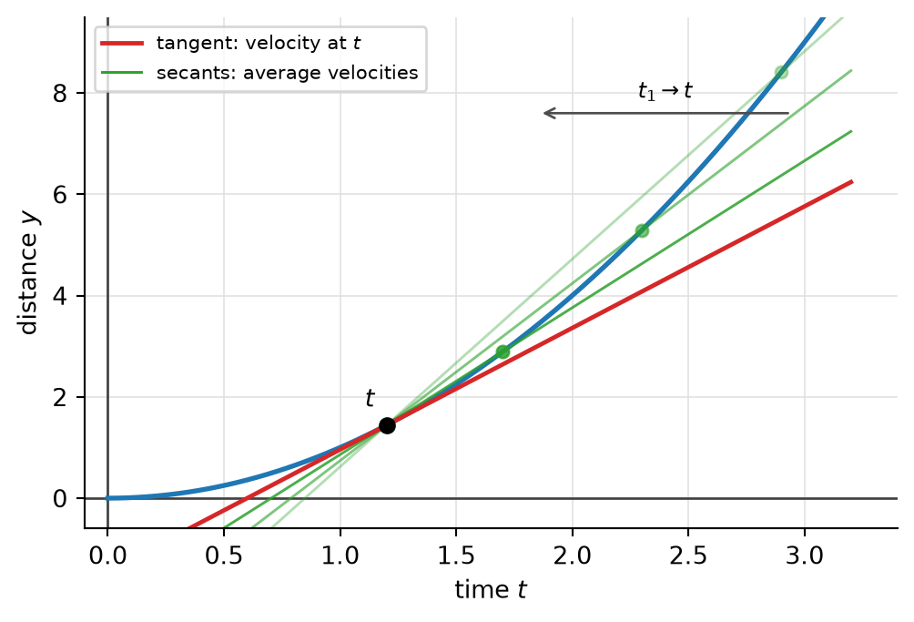
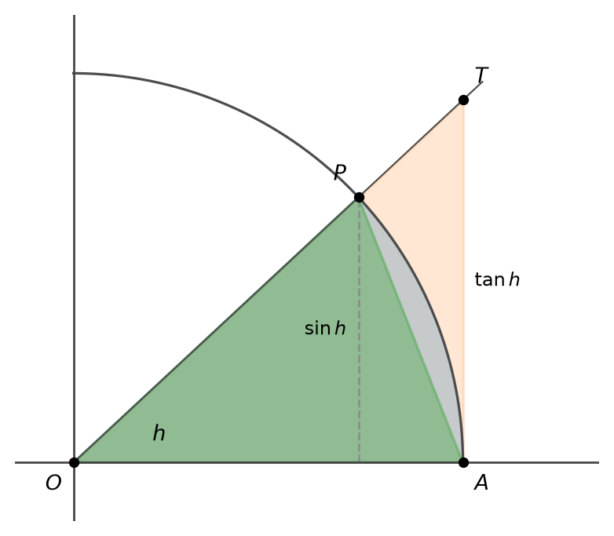
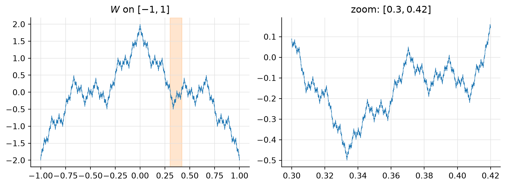
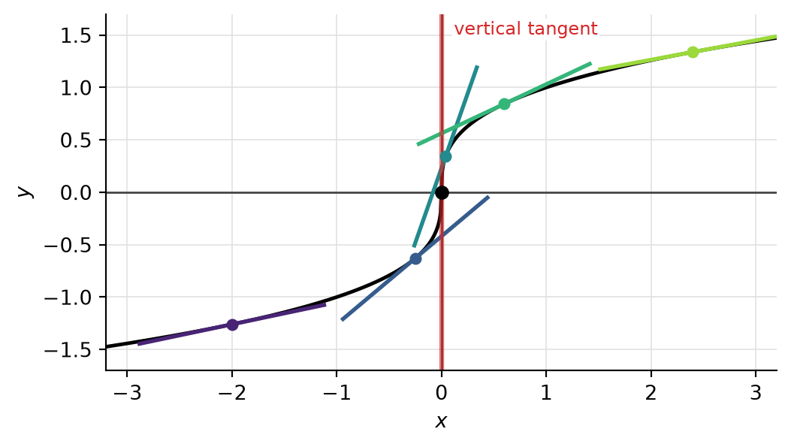
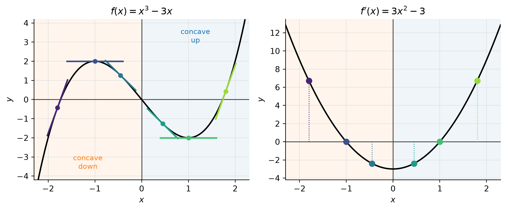

16 Working with Derivatives
16.1 Interpretations of the Derivative
Rate of change
If \(y=f(x)\), the difference quotient (Definition 15.1) \[ \frac{\Delta y}{\Delta x} = \frac{f(x_1)-f(x)}{x_1-x} \] measures how much \(y\) changes per unit change of \(x\) between \(x\) and \(x_1\): it is the average rate of change of \(f\) on the interval between \(x\) and \(x_1\). Its limit as \(x_1\to x\), the derivative \(f'(x)\), is the instantaneous rate of change of \(f\) at \(x\).
Velocity
Consider a point moving along a straight line, which we take to be the \(y\)-axis, so that \(y\) is the (signed) distance of the point from the origin. The motion is described by giving the position as a function of time: \[ y = f(t). \]
Uniform motion. If \(f\) is linear, \(f(t)=mt+b\), the motion is uniform with velocity \(m\): in \(t\) units of time, the point moves \(m\cdot t\) units of distance. In this case we recover \(m\) from any two distinct times \(t_1\neq t\) as \[ \frac{f(t_1)-f(t)}{t_1-t} = \frac{mt_1+b-mt-b}{t_1-t} = m\cdot\frac{t_1-t}{t_1-t} = m. \]
Non-uniform motion. If \(f\) is not linear, the same quotient \[ \frac{f(t_1)-f(t)}{t_1-t} \] depends on \(t_1\). It is the average velocity of the point in the time interval between \(t\) and \(t_1\): the velocity of a uniform motion that covers the same distance in the same time. Letting \(t_1\to t\), the average velocity converges, if the limit exists, to the velocity at time \(t\), \[ f'(t) = \lim_{t_1\to t}\frac{f(t_1)-f(t)}{t_1-t}. \] In other words, velocity is the instantaneous rate of change of position. Geometrically, the average velocity is the slope of a secant of the graph of \(f\), and the velocity at time \(t\) is the slope of the tangent (Figure 16.1).
Notation. Newton, who thought of derivatives primarily as velocities, wrote \(\dot y\) or \(\dot f(t)\) for the derivative with respect to time. This notation is still common in physics.
16.2 Computing Derivatives
Linear functions
Power functions with integer exponents
We need an algebraic identity that generalizes \(x_1^2-x^2 = (x_1-x)(x_1+x)\) and \(x_1^3-x^3=(x_1-x)(x_1^2+x_1x+x^2)\), which we used in Example 15.2 and Example 15.3. For every integer \(n\ge1\), \[ x_1^n - x^n = (x_1-x)\big(x_1^{n-1} + x_1^{n-2}x + \cdots + x_1x^{n-2} + x^{n-1}\big). \tag{16.1}\] To check it, multiply out the right-hand side: \(x_1\) times the bracket gives \(x_1^n + x_1^{n-1}x + \cdots + x_1x^{n-1}\), and \(-x\) times the bracket gives \(-x_1^{n-1}x - \cdots - x_1x^{n-1} - x^n\). All terms cancel except \(x_1^n\) and \(-x^n\).
NoteProof
Proof. For \(x_1\neq x\), Equation 16.1 gives \[ \frac{f(x_1)-f(x)}{x_1-x} = \frac{x_1^n-x^n}{x_1-x} = x_1^{n-1} + x_1^{n-2}x + \cdots + x_1x^{n-2} + x^{n-1}. \] The right-hand side is a polynomial in \(x_1\), hence continuous, so we can take the limit \(x_1\to x\) by plugging in \(x_1=x\) (Proposition 10.2). Each of the \(n\) terms becomes \(x^{n-1}\), so \[ f'(x) = \lim_{x_1\to x}\big(x_1^{n-1} + x_1^{n-2}x + \cdots + x_1x^{n-2} + x^{n-1}\big) = n\,x^{n-1}. \]
For negative exponents we must assume \(x\neq 0\), since \(x^{-n}\) is not defined at \(0\) (Definition 5.3).
NoteProof
Proof. Let \(x\neq 0\), and let \(x_1\neq x\) with \(x_1\neq 0\). Then \[ \frac{f(x_1)-f(x)}{x_1-x} = \frac{\dfrac{1}{x_1^n}-\dfrac{1}{x^n}}{x_1-x} = \frac{x^n-x_1^n}{x_1^n x^n\,(x_1-x)} = -\frac{1}{x_1^nx^n}\cdot\frac{x_1^n-x^n}{x_1-x}. \] By Equation 16.1, \[ \frac{f(x_1)-f(x)}{x_1-x} = -\frac{x_1^{n-1} + x_1^{n-2}x + \cdots + x_1x^{n-2} + x^{n-1}}{x_1^n x^n}. \] As \(x_1\to x\), the numerator tends to \(n x^{n-1}\) (as in the previous proof) and the denominator to \(x^{2n}\neq0\). By the limit laws (Proposition 10.3), \[ f'(x) = -\frac{n\,x^{n-1}}{x^{2n}} = -n\,x^{-n-1}. \]
So the power rule \[ \frac{d}{dx}\,x^\alpha = \alpha\, x^{\alpha-1} \] holds for every integer \(\alpha\) (for \(\alpha=0\) both sides are \(0\), if \(x\neq0\)). We will extend it to arbitrary real exponents \(\alpha\) later. We have already seen one instance: \((\sqrt x)' = \frac{1}{2\sqrt x} = \frac12 x^{-1/2}\) (Example 15.4).
Trigonometric functions
To differentiate \(\sin\) and \(\cos\) we need two limits. Here, as always in calculus, angles are measured in radians.
NoteProof
Proof. Let \(0<h<\frac\pi2\), and consider the unit circle with \(O=(0,0)\), \(A=(1,0)\), \(P=(\cos h,\sin h)\) and \(T=(1,\tan h)\) (Figure 16.2). The triangle \(OAP\) lies inside the circular sector \(OAP\), which lies inside the triangle \(OAT\). Comparing areas, \[ \frac12\sin h \;<\; \frac h2 \;<\; \frac12\tan h . \] (The sector is the fraction \(\frac{h}{2\pi}\) of the disk, whose area is \(\pi\), so its area is \(\frac h2\). This is where radian measure enters.) Dividing by \(\frac12\sin h>0\) gives \(1<\frac{h}{\sin h}<\frac{1}{\cos h}\), that is, \[ \cos h \;<\; \frac{\sin h}{h} \;<\; 1 . \] Since \(\cos(-h)=\cos h\) and \(\frac{\sin(-h)}{-h}=\frac{\sin h}{h}\), these inequalities hold for \(0<\lvert h \rvert<\frac\pi2\). Now let \(h_n\to0\) with \(h_n\neq0\). Eventually \(\lvert h_n \rvert<\frac\pi2\), and \(\cos h_n\to\cos 0 = 1\) by continuity of \(\cos\) (Remark 10.3). By the squeeze theorem (Proposition 8.3), \(\frac{\sin h_n}{h_n}\to1\). Since this holds for every such sequence, the first limit follows (Definition 10.1).
For the second limit, multiply numerator and denominator by \(\cos h+1\) and use \(\cos^2h-1 = -\sin^2h\): \[ \frac{\cos h-1}{h} = \frac{\cos^2 h-1}{h\,(\cos h+1)} = -\frac{\sin h}{h}\cdot\frac{\sin h}{\cos h+1} \;\longrightarrow\; -1\cdot\frac{0}{2} = 0 \] by the first limit, continuity of \(\sin\) and \(\cos\), and the limit laws (Proposition 10.3).

NoteProof
Proof. By the addition formula \(\sin(x+y) = \sin x\cos y + \cos x\sin y\), for \(h\neq0\), \[ \begin{aligned} \frac{\sin(x+h)-\sin x}{h} &= \frac{\sin x\cos h + \cos x\sin h - \sin x}{h} \\ &= \sin x\cdot\frac{\cos h-1}{h} + \cos x\cdot\frac{\sin h}{h}. \end{aligned} \] Here \(x\) is fixed, so \(\sin x\) and \(\cos x\) are constants. By Lemma 16.1 and the limit laws (Proposition 10.3), \[ \lim_{h\to0}\frac{\sin(x+h)-\sin x}{h} = \sin x\cdot 0 + \cos x\cdot 1 = \cos x . \] The derivative of \(\cos\) is Exercise 16.1.
NoteSolution
Solution. For \(h\neq0\), \[ \begin{align} \frac{\cos(x+h)-\cos x}{h} & = \frac{\cos x\cos h - \sin x\sin h-\cos x}{h} \\ & = \cos x\cdot\frac{\cos h-1}{h} - \sin x\cdot\frac{\sin h}{h} \;\longrightarrow\; \cos x\cdot 0 - \sin x\cdot 1 = -\sin x . \end{align} \]
16.3 Sum and Constant Multiple Rules
As for the integral (Proposition 13.2, Proposition 13.3), there are basic rules that follow directly from the definition and the limit laws.
NoteProof
Proof. For \(h\neq0\), \[ \frac{\varphi(x+h)-\varphi(x)}{h} = \frac{f(x+h)+g(x+h)-f(x)-g(x)}{h} = \frac{f(x+h)-f(x)}{h} + \frac{g(x+h)-g(x)}{h}. \] As \(h\to0\), the first quotient on the right tends to \(f'(x)\) and the second to \(g'(x)\). By the limit law for sums (Proposition 10.3), the left side tends to \(f'(x)+g'(x)\).
NoteProof
Proof. For \(h\neq0\), \[ \frac{\psi(x+h)-\psi(x)}{h} = c\cdot\frac{f(x+h)-f(x)}{h} \;\longrightarrow\; c\,f'(x) \qquad(h\to 0), \] by the limit law for products, applied to the constant function \(c\).
Combining the two rules, \((\alpha f+\beta g)' = \alpha f'+\beta g'\) for all constants \(\alpha,\beta\); in particular \((f-g)' = f'-g'\). Together with the power rule, this lets us differentiate every polynomial.
16.4 Differentiability vs. Continuity
NoteProof
Proof. Assume \[ \lim_{h\to0}\frac{f(x+h)-f(x)}{h} = f'(x), \qquad -\infty < f'(x) < \infty . \] For \(h\neq 0\) we can write \(f(x+h)-f(x) = \dfrac{f(x+h)-f(x)}{h}\cdot h\). By the limit law for products (Proposition 10.3), \[ \lim_{h\to0}\big(f(x+h)-f(x)\big) = \lim_{h\to0}\frac{f(x+h)-f(x)}{h}\cdot\lim_{h\to0} h = f'(x)\cdot 0 = 0 . \] Hence \(f(x+h)\to f(x)\) as \(h\to0\). Substituting \(x_1=x+h\) as in the previous chapter, this says \(\lim_{x_1\to x}f(x_1) = f(x)\), so \(f\) is continuous at \(x\) (Proposition 10.2).
As a consequence, every function we have differentiated so far (polynomials, \(x^{-n}\), \(\sqrt x\), \(\sin\), \(\cos\)) is continuous wherever it is differentiable, without a separate continuity proof (compare Remark 10.3).
The converse is false. There are functions that are continuous everywhere but not differentiable at some point. The simplest is \(f(x)=\lvert x \rvert\) at \(x=0\) (Example 15.1). For \(h\neq 0\), \[ \frac{f(0+h)-f(0)}{h} = \frac{\lvert h \rvert}{h} = \begin{cases} 1 & h>0, \\ -1 & h<0. \end{cases} \] The one-sided limits (Definition 10.2) exist but disagree: the right-hand derivative at \(0\) is \(1\) and the left-hand derivative is \(-1\). So \(\lim_{h\to0}\frac{\lvert h \rvert}{h}\) does not exist, and \(\lvert x \rvert\) is not differentiable at \(0\); its graph has a corner. Another example is \(x\sin(1/x)\) (with value \(0\) at \(0\)), which is continuous at \(0\) but has no tangent there (Exercise 15.1).
Differentiability thus expresses precisely what we would intuitively call smoothness of a graph. How badly can it fail?

16.5 Infinite Derivatives
By the power rule, \(\frac{d}{dx}x^\alpha = \alpha x^{\alpha-1}\). For some exponents the derivative is not defined at a point where the original function is.

One says that \(f\) has an infinite derivative at such a point. Keep in mind that this is only a manner of speaking: the derivative in the sense of Definition 15.2 does not exist, and the difference quotient merely increases beyond all bounds. We met the same phenomenon, from one side only, for \(\sqrt x\) at \(0\) (Example 15.4).
NoteSolution
Solution. For \(x_1\neq x\), with \(u=x_1^{1/3}\), \(v=x^{1/3}\) we have \(u\neq v\) and \(x_1-x=u^3-v^3\), so \[ \frac{x_1^{1/3}-x^{1/3}}{x_1-x} = \frac{u-v}{(u-v)(u^2+uv+v^2)} = \frac{1}{u^2+uv+v^2}. \] As \(x_1\to x\), \(u\to v\) by continuity of the cube root, so the denominator tends to \(3v^2 = 3x^{2/3}\). If \(x\neq0\) this is nonzero, and the limit laws give \(\frac{1}{3x^{2/3}} = \frac13x^{-2/3}\). If \(x=0\), then \(v=0\) and the denominator \(u^2\) tends to \(0\): the quotient \(\frac{1}{u^2}\) is unbounded.
NoteSolution
Solution. For \(h\neq0\), \(\dfrac{g(h)-g(0)}{h} = \dfrac{h^{2/3}}{h} = h^{-1/3} = \dfrac{1}{\sqrt[3]{h}}\). As \(h\to0^+\) this tends to \(+\infty\), and as \(h\to0^-\) it tends to \(-\infty\). The graph has a cusp at the origin: both branches meet the \(y\)-axis vertically, coming down from above on either side. (C&J call this curve the semicubical parabola.)
16.6 What the Derivative Tells Us About a Function
If \(f'(x)>0\), the tangent at \((x,f(x))\) has positive slope, and we expect \(f\) to be “increasing at \(x\)”. If \(f'(x)<0\), we expect \(f\) to be decreasing there. To make this precise, we have to talk about intervals.
NoteProof
Proof.
Let \(f\) be increasing and \(x\in I\). For \(h>0\) (with \(x+h\in I\)), \(f(x+h)\ge f(x)\), so the difference quotient \(\frac{f(x+h)-f(x)}{h}\) is \(\ge0\). For \(h<0\), \(f(x+h)\le f(x)\): numerator and denominator are both \(\le 0\), and again the quotient is \(\ge0\). So every difference quotient is \(\ge 0\), and so is their limit \(f'(x)\) (compare the argument at the end of the proof of Theorem 10.2). The decreasing case is the same with the inequalities reversed.
This direction is deeper. It needs the Mean Value Theorem of differential calculus, and we will prove it then (C&J §2.8.h–i).
For example, \(0\) is a critical point of \(x^2\), where the function has its minimum, and of \(x^3\), where it has neither a minimum nor a maximum.
Next, consider how the derivative itself changes. If \(f'\) is increasing on an interval, the slope of \(f\) increases from left to right: the graph bends upward. If \(f'\) is decreasing, the graph bends downward (Figure 16.5).
For instance, \(x^2\) is concave up on \(\mathbb{R}\), since \(f'(x)=2x\) is increasing. The function \(x^3\) has \(f'(x)=3x^2\), which is decreasing on \((-\infty,0]\) and increasing on \([0,\infty)\): so \(x^3\) is concave down on \((-\infty,0]\) and concave up on \([0,\infty)\).

16.7 Summary
The difference quotient \(\frac{\Delta y}{\Delta x}\) is the average rate of change of \(f\); the derivative is the instantaneous rate of change. For a position \(y=f(t)\), the difference quotient is the average velocity and \(f'(t)=\dot f(t)\) is the velocity at time \(t\) (Figure 16.1). A freely falling body, \(f(t)=at^2\), has velocity \(2at\) (Example 16.1).
Basic derivatives: \((mx+b)'=m\) (Example 16.2); \((x^n)' = nx^{n-1}\) for all integers \(n\) (with \(x\neq0\) if \(n<0\)), by the factorization Equation 16.1 (Proposition 16.1, Proposition 16.2); \((\sin x)'=\cos x\) and \((\cos x)'=-\sin x\) (Proposition 16.3), using \(\frac{\sin h}{h}\to1\) and \(\frac{\cos h-1}{h}\to0\) (Lemma 16.1).
When computing derivatives, keep \(\lim\) in every line until the limit is taken (Remark 16.1).
Linearity: \((f+g)'=f'+g'\) and \((cf)'=cf'\) (Proposition 16.4, Proposition 16.5), so every polynomial can be differentiated term by term (Example 16.3). There is no such rule for products (Remark 16.2).
Differentiable implies continuous (Theorem 16.1), as long as the derivative is finite (Remark 16.3). The converse fails: \(\lvert x \rvert\) has a corner at \(0\), with one-sided derivatives \(\pm1\), and there are even continuous functions that are nowhere differentiable (Remark 16.4).
A continuous function can have an infinite derivative, where the difference quotient is unbounded and the tangent is vertical, as for \(\sqrt[3]{x}\) at \(0\) (Example 16.4).
Shape from the derivative: increasing \(f\) has \(f'\ge0\), and \(f'>0\) on an interval makes \(f\) strictly increasing (proof later, via the Mean Value Theorem) (Proposition 16.6); the converse fails for \(x^3\) at \(0\). Points with \(f'(x)=0\) are critical points (Definition 16.1). \(f\) is concave up/down where \(f'\) is increasing/decreasing (Definition 16.2).